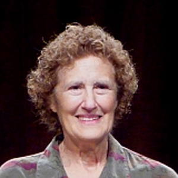

Women in computing
famous women
Ada Lovelace
(1815-1852)

An analyst of Charles Babbage's analytical engine and is often described as the "first computer programmer."
Grace Hopper
(1906-1992)

A United State Navy officer and the first programmer of the Havard Mark I, known as the "Mother of COBOL". She developed the first ever complier for an electronic computer, known as A-0.
Fances Allen
(1932-)

THe first female IBM Fellow in 1989. In 2006 she became the first female recipent of the ACM's Turing Award.
Barbara Liskov
(1939-)

Developed the Liskov substitution principle. Liskov was also the winner of the Turing Prize in 2008.
Anita Borg
(1949-2003)

The founding director of the institute for WOmen and Technology (IWT)
Maria Klawe
(1951-)
The first woman to become President of Harvey Mudd College since its founding in 1955 and was ACM president from 2002 until 2004.
organization
These are ome awesome organization that help women in cmputing. This is a brief list and there are many more out there.
- National Centern for Women & Information Technology
- Anita Borg Institute for Women and Technology
- The Ada Initiative
- Girl Develop it
- Black Girls Code
- Rails Girls
fun fact
- Every year the Anita Borg Institute holds the Grace Hopper Celebration of Women in Computing conference to bring the research career interests of women in computing to the forefront
- 25% of the computing workforce were in 2011 reference
- The DevChix google group has over 1000 members
- Girl Develop It has chapters in eleven cites
- Women earned 18% of the Computer and Information Sciences undergraduate degrees in 2010. reference
- The U.S. Bureau of Labor Statistics projects that by 2018, there will be a total of nearly 1.4 million computing-related jobs added in the U.S., an increasing of 22% from 2008. reference
- The median age of women in computing and mathematical occupations is 42. reference
- Of the 20 occupations with the highest median earnings for women, 5 are computing occupations: computer software engineers, computer and information systems managers, computer programmers, computer scientists and system analysts, and network system and data communications analysis. reference